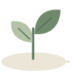
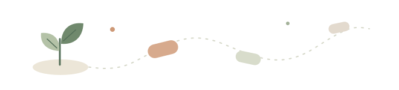

<!doctype html>
<html lang="zh-CN">
<meta charset="utf-8">
<meta name="viewport" content="width=device-width,initial-scale=1">
<title>FocusFlow 工作台</title>
<link rel="icon" href="art/logo.svg" type="image/svg+xml">
<link rel="stylesheet" href="desk.css?v=art-1">
<script defer src="desk.js"></script>
<main>
<header><a class="brand" href="../">FocusFlow</a><span>浏览器版</span></header>
<section id="draft">
<div class="intro">
<div>
<h1>想做什么？从一小步开始。</h1>
<p>写下你想做的事，让 FocusFlow 帮你看看从哪里开始。</p>
</div>

</div>
<form id="start">
<label for="task">眼前这件事</label>
<textarea id="task" rows="3" required maxlength="500" placeholder="比如，写论文的讨论部分"></textarea>
<button class="with-icon icon-start">出发咯</button>
</form>

</section>
<section id="current" hidden>
<p id="goal"></p>
<h1 id="state-heading">眼前这一小步</h1>
<form id="step-form">
<label for="step">这一步可以自己改</label>
<textarea id="step" rows="2" required maxlength="500"></textarea>
<button class="quiet">保存步骤</button>
</form>
<form id="pause-form">
<label for="note">回来时提醒自己（选填）</label>
<input id="note" maxlength="500" placeholder="比如，接着看结果章节的第二段">
<button class="quiet with-icon icon-pause">暂停并留下书签</button>
</form>
<p id="return-note" hidden></p>
<div class="actions">
<button id="resume" hidden>接着来</button>
<button id="done" class="with-icon icon-complete">这一步完成了</button>
</div>
</section>
<section class="shelf">
<h2>工作台</h2>
<form id="capture">
<label for="thought">先放下别的念头</label>
<input id="thought" maxlength="500" required placeholder="比如，等会儿回邮件">
<button class="quiet">暂存</button>
</form>
<ul id="thoughts"></ul>
</section>
<p id="notice" role="status"></p>
<footer>步骤建议来自本地模板。任务和书签只存于当前浏览器。<br><a href="https://github.com/anyan001121-dot/focusflow">完整项目与源码</a></footer>
</main>
</html>
